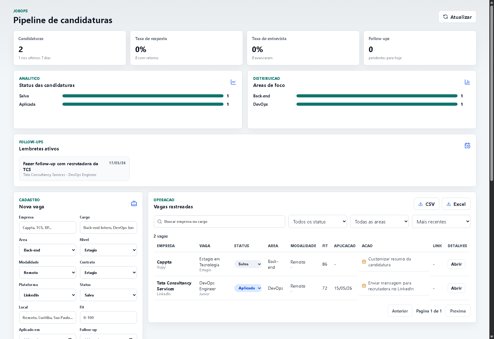
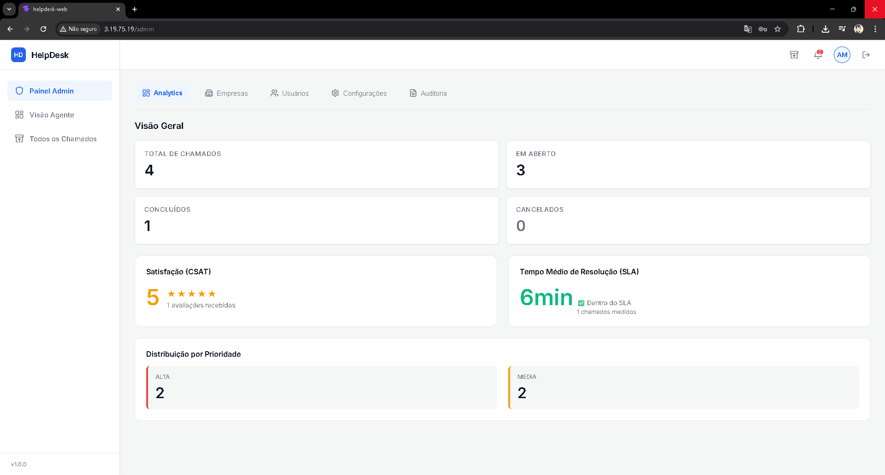
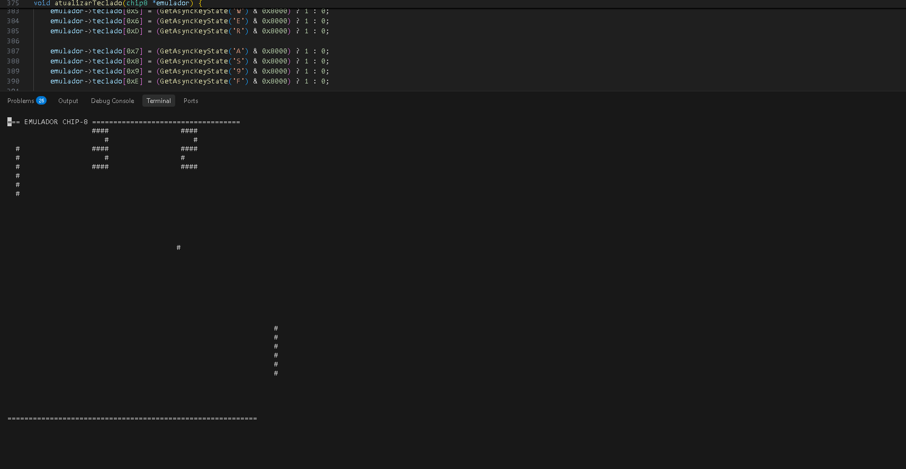

01 / Product & Career Ops
JobOps
Pipeline de candidaturas com métricas, empresas, currículos, follow-ups e exportação.
Abrir no GitHubEstudante de Engenharia de Computação focado em Back-end, Cloud, DevOps, Python e dados. Eu gosto de transformar problema real em sistema que roda, registra, entrega e pode ser mantido.


Pipeline de candidaturas com métricas, empresas, currículos, follow-ups e exportação.
Abrir no GitHubFluxo de chamados, autenticação, chat em tempo real, Docker Compose, Nginx e deploy em AWS EC2.
Abrir no GitHub
Emulador de CPU em C++, com ciclo fetch/decode/execute, memória simulada e renderização simples.
Abrir no GitHubAPIs REST, autenticação, regras de negócio, modelagem e integração com bancos relacionais.
Ambientes reproduzíveis, deploy, troubleshooting, logs e pipelines de validação.
Análise de dados, automações, manipulação de planilhas, consultas e uso de IA para acelerar investigação e entrega.
Interesse forte por entender o que acontece abaixo das abstrações do framework.
Estou cursando Engenharia de Computação na UTFPR. Meu foco atual é consolidar uma base forte em back-end, infraestrutura, Python, dados e IA aplicada: APIs, bancos, containers, Linux, CI/CD e cloud.
Tenho experiência prática com suporte técnico, projetos acadêmicos e produtos próprios. Quero evoluir para um perfil que entende tanto arquitetura de software quanto operação.
Aberto para estágio, projetos, conversas técnicas e oportunidades em back-end/cloud/DevOps.